One project, two ways to work
Problem-Based SRS ships as two things: Skills, the methodology your AI assistant runs step by step, and the SRS Navigator, a Copilot app that turns the resulting spec into a graph you refine together. Use either on its own, or both.
Skills
Ten AgentSkills walk a coding assistant from a customer problem to traceable requirements, one decision at a time.
- Business context, customer problems, needs, then functional requirements
- Every requirement traces back to the problem it solves
- Runs in GitHub Copilot, Claude Code, and Claude.ai
SRS Navigator
A Copilot canvas that renders your specification as an interactive graph, then lets you decompose and iterate on it with the agent, in place.
- CP Problem
- CN Need
- FR Requirement
- NFR Non-functional
- Force-directed graph of every artifact and its traceability
- Inline action bar to derive or decompose any node
- Health metrics surface orphaned problems and unmet needs
Most requirements start in the wrong place
"We need a reporting dashboard with 20 charts."
You build it. Three weeks. Ship it. They use 3 of the 20 charts. The actual problem was slow data access, not visualization. Two weeks of engineering time, gone.
This methodology reverses the order. Instead of starting with the stakeholder's solution, you start with their problem:
CP.01: "Managers must access sales data within 5 seconds to make decisions."
From that problem, you derive the need (CN: real-time data access), then the requirement (FR: data API + 3 targeted charts). Built in one week. Solves what actually matters.

How it works
Six steps. Each builds on the previous. Your AI assistant guides the conversation.
What governs this project?
Project identity, constraints, success criteria. Establishes principles for all downstream decisions.
/business-contextWhat is broken, and for whom?
Identify and classify problems by severity: Obligation (must solve), Expectation (should solve), Hope (could solve).
/customer-problemsWhat might help?
High-level solution sketch. Components, boundaries, interfaces. Shared understanding before details.
/software-glanceWhat must the system deliver?
Required outcomes per problem. Measurable, testable, scoped. Each need traces to a specific problem.
/customer-needsHow will it work?
Architecture, technical approach, constraints, stakeholder alignment. The technical roadmap.
/software-visionWhat are the details?
Detailed, testable behavior specifications. Each requirement traces backward to a need and a problem.
/functional-requirementsEvery requirement traces backward. You can always answer: "Why are we building this?"
Not all problems are equal
The methodology classifies each problem by severity, so priority reflects actual impact.
High priority. Legal, contractual, or operational failure if unsolved. Build this first.
Medium priority. Degraded business outcomes if unsolved. Core value and user satisfaction.
Low priority. Missed improvement opportunity if unsolved. Build this last.
Start from the system you already have
Most specs start on a brownfield: software that already exists, with no written requirements. When you open the SRS Navigator without a spec, it offers to read your current system and work backward to the problems it solves.
Learn & Create Spec
Point the navigator at a repository. It scans the code, the README, and the documentation, then runs the full methodology to draft customer problems, needs, and requirements into your .spec/ folder. You review and refine from there.
- 1 Scan the existing code, README, and documentation
- 2 Run the methodology to draft problems, needs, and requirements
- 3 Load the result as a graph you refine with the agent
Already have a spec? Load a .spec JSON file, or explore the demo to tour the features first.
Problem-Based SRS
Load or generate a specification to visualize as an interactive graph.
- Force-directed graph
- Problem to requirement tracing
- Agent-driven generation
See your spec as a living graph
The SRS Navigator renders every artifact and its traceability as an interactive, force-directed graph inside the GitHub Copilot side panel. It opens by building the chain in front of you, problems first, then the needs and links that address them, then the requirements that satisfy them, so the structure reads before you touch it. Filter by analysis mode, search any node, and follow problem to need to requirement without switching tools.
Every node is color-coded by type:
- CP Customer Problem
- CN Customer Need
- FR Functional Requirement
- NFR Non-Functional Requirement
Decompose and iterate with the agent
The navigator is more than a viewer. It's where you refine the specification together with the agent, without leaving the graph. Hover a node, describe the change, and the matching methodology skill does the work while traceability is preserved.
1 · The inline action bar
Hover any node to reveal an action bar. Type an instruction, then derive a downstream artifact (+CN, +FR, +NFR) or decompose the node into finer-grained, independently testable sub-items (+Sub-FR).

2 · The agent works in the side panel
Triggering an action opens the node's detail panel (description, complexity, and upstream/downstream traceability) alongside a live Agent Activity log. Your request runs through the methodology skill, the spec is edited, and the graph refreshes automatically.

Get started
Install
Ask your AI assistant:
Install the Problem-Based SRS skills from RafaelGorski/Problem-Based-SRS into .github/skills/For Claude Code, use .claude/skills/ instead. See the README for all installation methods.
Run your first session
/problem-based-srsDescribe your situation. The AI guides you through all six steps:
I need requirements for an inventory management system.
Our warehouse tracks everything in spreadsheets and loses $50k/month due to errors.What you get
Traced artifacts from business context through functional requirements, stored in your project's .spec/ directory. Every requirement links back to the customer problem it solves.
Commands
| Command | Purpose | Step |
|---|---|---|
| /problem-based-srs | Full methodology, all steps | All |
| /business-context | Project identity and constraints | 0 |
| /customer-problems | Identify and classify problems | 1 |
| /software-glance | Sketch solution approach | 2 |
| /customer-needs | Define required outcomes | 3 |
| /software-vision | Architecture and scope | 4 |
| /functional-requirements | Detailed, testable requirements | 5 |
| /zigzag-validator | Verify traceability across artifacts | Validate |
| /complexity-analysis | Axiomatic Design quality analysis | Optional |
Works with AgentSkills-compatible tools: GitHub Copilot, Claude Code, Claude.ai, Gemini CLI, and others.
Research and standards
Based on the methodology by Gorski & Stadzisz, published as peer-reviewed research.
DOI: 10.21529/RESI.2016.1502002
Requirement-writing guidance aligns with ISO/IEC/IEEE 29148:2018 for requirement quality, structured syntax, and bidirectional traceability. Normative keywords follow BCP 14 (RFC 2119 / RFC 8174) when written in ALL CAPITALS.
Case studies: CRM system walkthrough and renewable energy system walkthrough.